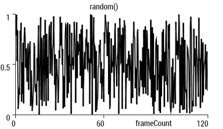
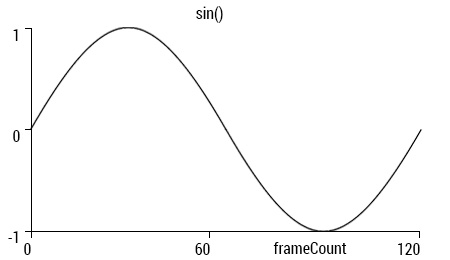
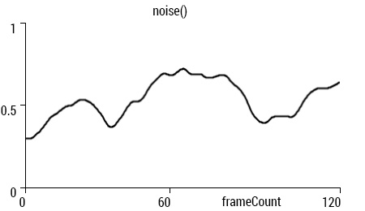

Meer animatie
In dit hoofdstuk gaan we kijken naar nog wat meer manieren waarop we animatie kunnen toepassen in p5js.
Noise
In een voorgaand hoofdstuk heb je geleerd om met de random() en sin() functies te werken. Als je elk frame deze functies aanroept geeft random() altijd een volledig willekeurig getal, terwijl sin() elk frame een getal geeft dat iets groter of kleiner is dan het vorige frame, omdat sinus een regelmatige golfbeweging volgt. Hieronder zie je dat in twee grafiekjes met de waarde uitgezet tegen de tijd.


noise() zit daar een beetje tussenin zou je kunnen zeggen. Net als sin() krijgen we bij noise() elk frame een getal dat iets groter of kleiner is dan het vorige frame, maar met wat meer willekeur. En noise is ook afhankelijk van de tijd, net als sinus. Hieronder zie je grafiek van de noise() functie.

Met noise() kun je dus meer harmonische, natuurlijke animaties maken dan met random(), maar minder regelmatig als met sin(), we noemen dat semi-random. Deze functie in p5.js is gebaseerd op Perlin noise, wat veel gebruikt wordt in computerspelletjes om bijv. landschappen te creëren. noise() geeft net als random() een getal tussen 0 en 1 terug. Hieronder een voorbeeld met alledrie de functies. De onderste cirkel gebruikt noise() voor de x-positie. Let ook even op het hergebruik van de xpos variabele; voor elke cirkel kennen we een nieuwe waarde toe aan de xpos mbv. de verschillende functies.
We kunnen natuurlijk ook noise() gebruiken voor de y-positie. Je zou dan dit kunnen doen:
Hee maar wacht even. De cirkel beweegt nu precies hetzelfde in de x-richting als in de y-richting.. waarom? Goed om te weten is dat noise() voor een bepaalde input altijd dezelfde output geeft, als je twee keer hetzelfde getal invoert in de functie krijg je beide keren dezelfde noise waarde terug (voor de duur dat je programma draait). We kunnen dit testen in de editor:
console.log(noise(0));
console.log(noise(1));
console.log(noise(2));
console.log(noise(3));
console.log(noise(0));
console.log(noise(1));
console.log(noise(2));
console.log(noise(3));
levert zoiets op:
0.0987706235977439
0.20249633021219143
0.32403375619384556
0.6585596236116547
0.0987706235977439
0.20249633021219143
0.32403375619384556
0.6585596236116547
Je ziet, de tweede vier waarden zijn hetzelfde als de eerste vier. Dat betekent dat als we de cirkel in de y-richting anders willen laten bewegen dan in de x-richting, we verschillende getallen in de noise() functie moeten stoppen.
Ok prima. Maar wat als we een heleboel cirkels willen animeren met noise? We nemen weer een voorbeeld uit een eerder hoofdstuk om een grid van cirkels te tekenen. De noise() functie accepteert ook twee of drie parameters. Als we twee parameters gebruiken dan kunnen we een noise waarde genereren op basis van de x- en y-positie van de cirkels. Dit noemen we 2D noise. In het volgende voorbeeld gebruiken we de noise waarden om de grootte van de cirkels te bepalen. Ook hebben we de x en y gedeeld door honderd zodat de noise waarden wat dichter bij elkaar liggen.
Maar we hebben nu nog geen animatie. Daarvoor kunnen we de derde parameter van de noise() functie gebruiken, daar voeren we de tijd in. We delen daarvoor de frameCount door tweehonderd, weer om te zorgen dat de noise waarden niet teveel van elkaar verschillen zodat alles niet te snel beweegt. Je zult altijd een beetje moeten experimenteren met die getallen totdat je tevreden bent met de gegenereerde patronen en de snelheid van je animaties.
Noise animatie met objecten
Aangezien we meerdere dezelfde vormen tekenen gaan we dit voorbeeld weer herschrijven naar objectgeoriënteerd, want dan kunnnen we er meer mee. En deze animatie doet me een beetje denken aan een camouflage patroon, dus ik heb de kleur van de cirkels ook aangepast en gebaseerd op de noise waarde die voor elk object gegenereerd wordt. Je kunt natuurlijk allerlei eigenschappen van je vormen animeren met noise.
In het volgende voorbeeld hebben we wat kleine aanpassingen gedaan die een heel ander resultaat opleveren. In plaats van cirkels worden vierkantjes getekend en de grootte van de vormen wordt niet meer geanimeerd, alleen de kleuren.
Ook kunnen we bijvoorbeeld vormen roteren afhankelijk van de noise waarde. Dan moeten we natuurlijk wel weer translate(), push() en pop() gebruiken.